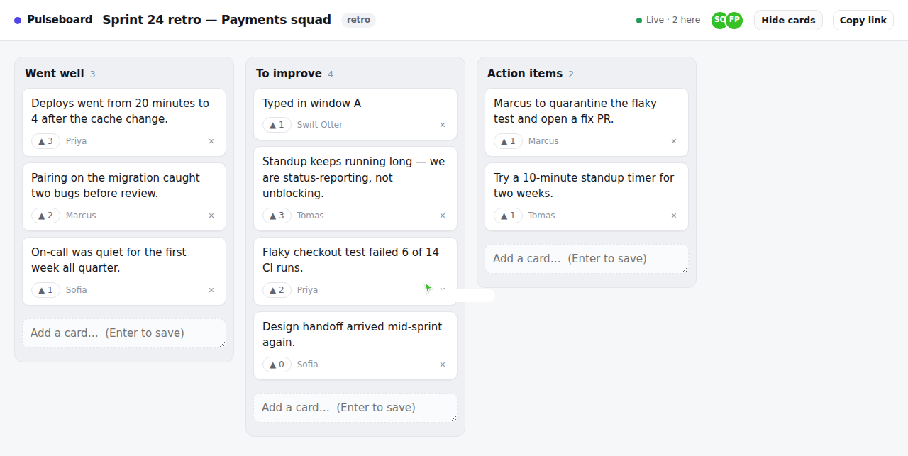

Real-time retro and kanban boards
Boards that move while you watch.
Open the same URL in two windows and drag a card. It lands in both, with presence cursors and live votes. No accounts — the link is the room.

The hard part
Two people drag the same card at the same moment. What happens?
Most tutorials answer “last write wins” and move on, which in practice means one person’s drag silently undoes the other’s while both screens show something different. Pulseboard answers it in three parts.
1. Positions are fractional indexes, not integers
A card’s place is a base-62 string compared lexicographically. Dropping between "a1" and "a3" mints "a2" and writes one row. The integer alternative renumbers the whole column on every move, so concurrent drops collide on rows neither person touched.
That design has a dependency it does not announce: the keys are compared byte-wise. Postgres only does that if you say so — a text column inherits the database collation, and under en_US.UTF-8 the comparison is case-insensitive, so 'l' < 'V' and the server silently disagrees with the client about card order. The tests passed twenty times locally and failed on the first CI run, because my Postgres was C.UTF-8 and the stock image is not. Fixed by pinning the column to COLLATE "C", with a regression test.
2. Only one end of the drop is trusted
The browser says “put this between A and B”, but by the time that lands, B may have moved and someone else’s card may already be in the gap. The server trusts one anchor and re-reads the other bound under a row lock. Trusting both is what makes two simultaneous drops mint the same key — there is a test that fails against that version and passes against this one.
3. Same card, same moment → the loser is told
Every card carries a version. A stale drag is rejected with the authoritative card, so the optimistic UI snaps back with a toast instead of resurrecting a position someone already moved away from.
4. …and votes deliberately skip all of it
Votes commute — two people voting at the same instant is not a conflict, it is two votes. Knowing which operations need concurrency control is most of the work; adding it everywhere is just latency.
Not concurrency, but worth a line
Retro boards hide cards until everyone has written theirs. That masking happens on the server — a hidden card’s text is never sent to another client. Masking in CSS is one devtools inspection away from useless, which rather defeats a blind retro.
Running it
It is a server application — Postgres, sessions, and a live WebSocket connection. This page is a static showcase; the app itself needs somewhere to run. One command does it:
git clone https://github.com/0211IkeVenLouie/pulseboard
cd pulseboard
docker compose upThat brings up Postgres, runs the migrations and seeds a demo with real data in it, so there is something to look at the moment it boots.
See it for yourself
- Open the demo board in two windows, side by side.
- Drag the same card to different columns at the same time. One lands; the other snaps back.
- Drag different cards into the same gap at once. Both land, in the same order in both windows.
- Hit Hide cards in one window and inspect the other’s DOM. The text is not there.